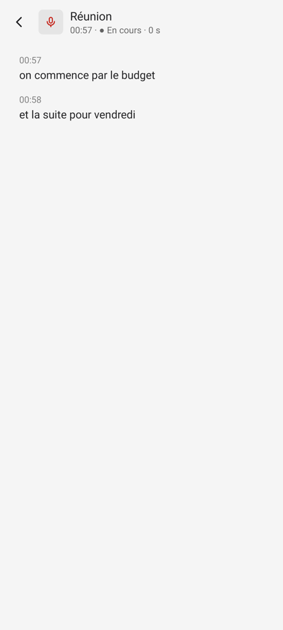
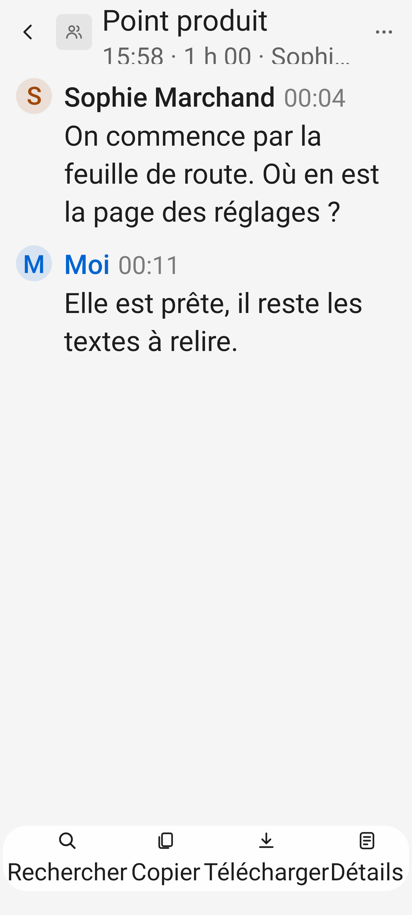
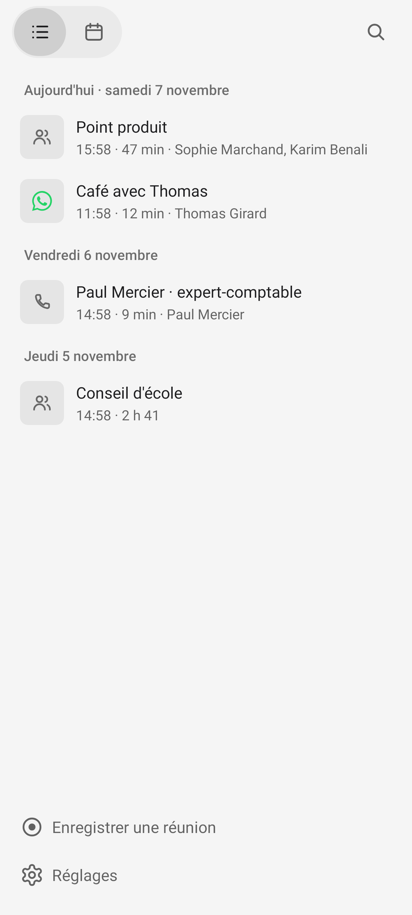
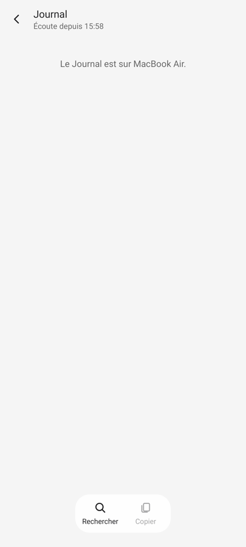
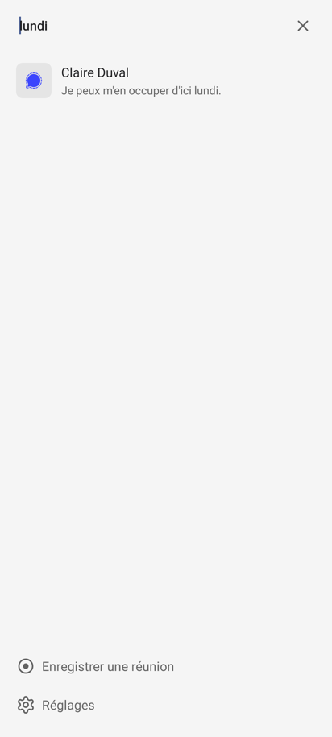
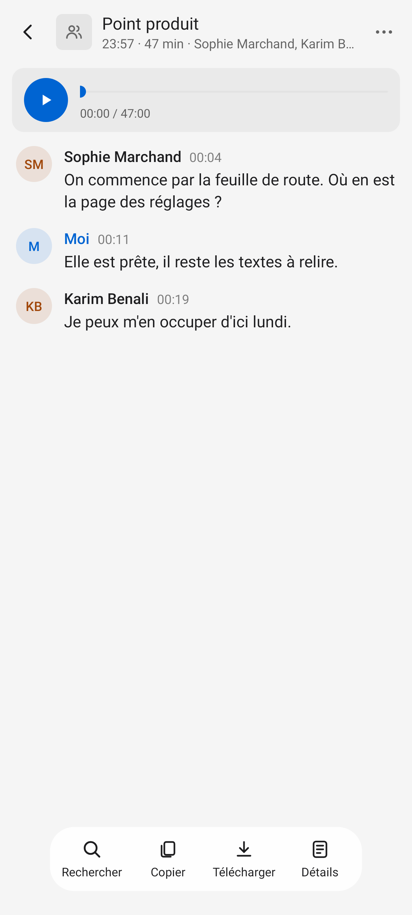
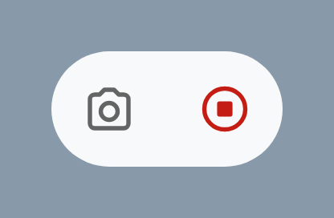
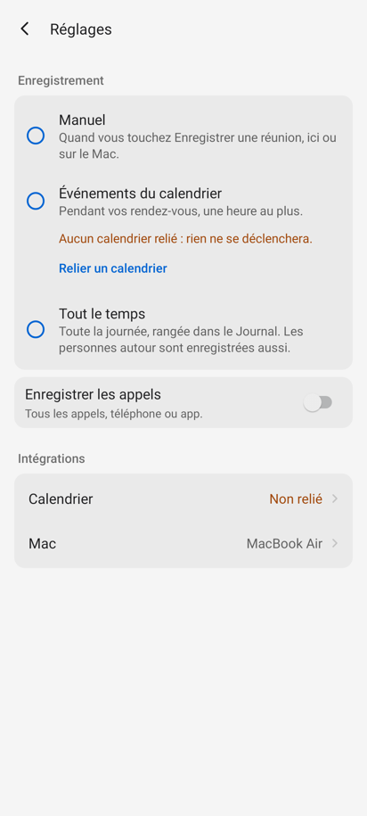

App Android : dix-huit retouches de détail, d'abord les états vides, l'arrêt pendant un enregistrement et la grande police
Ce que j'ai regardé. L'app Android de la branche recos-design (version du 7 novembre 2026), écran par écran : accueil (liste, calendrier, recherche), une conversation (lecteur, répliques, barre du bas, menu ⋯), une conversation en cours, le Journal, les Réglages, la mise en route, la pastille volante, le point rouge, les notifications et les demandes d'autorisation.
Comment. Le banc (gradlew testDebugUnitTest, Robolectric, 412 × 915 dp) pour les vrais écrans ; un banc complémentaire, gardé hors du dépôt, pour les états qu'il ne photographie pas : accueil vide, recherche sans résultat, filtre sans résultat, Journal sans le Mac, lien perdu, calendrier manquant, et police à 200 %. Le code de phone/android pour le reste (notifications, autorisations, TalkBack, retour, écran verrouillé). Les captures du Mac 0.24.0 pour le vocabulaire. Pas de vrai téléphone : ce qui touche à l'écran verrouillé et au rendu des notifications est lu dans le code, et dit comme tel.
Ce qui tient déjà bien. La liste par jour, les vignettes qui disent ce qu'était la conversation, le pied à une main, la confirmation de suppression qui dit la conséquence, les choix d'enregistrement qui disent ce qu'ils font, la mise en route en une étape, les cibles de 48 dp presque partout. Les recos ci-dessous sont des retouches, pas une refonte.
À noter pour le banc. Entre minuit et une heure du matin (heure du conteneur), deux tests échouent : laccueilListeLesConversationsParJour et leCalendrierMontreLeMoisEtLeJour placent une conversation « il y a une heure », qui tombe alors la veille. Ce n'est pas l'app ; l'image accueil.png manque simplement ces nuits-là.
Chaque reco dit où, ce que j'ai vu, pourquoi ça compte (sens, familiarité ou fonction), ce que je propose, avec un croquis avant / après, la gravité (gêne : quelqu'un se trompe ou bloque ; détail : ça se voit, sans bloquer) et l'effort. Quand une reco va contre un choix fait exprès, le commit est cité.
Accueil sans conversation (HomeScreen.render), recherche de l'accueil sans résultat, recherche dans une conversation sans résultat (ConversationScreen.filter : empty ne regarde que all, pas shown).
Vu
Trois écrans entièrement blancs. Pendant la recherche de l'accueil, le pied « Enregistrer une réunion · Réglages » reste affiché sous un champ sans résultat. Dans une conversation, taper un mot absent efface toutes les répliques sans un mot.
Pourquoi
Un écran blanc se lit comme « ça charge » ou « c'est cassé ». TEXTES.md donne déjà la forme : « Ce qui manque et, s'il existe, le geste pour le remplir ». Messages, Enregistreur et Téléphone de Google ont tous un état vide d'une ligne.
Proposé
Accueil : « Aucune conversation » et, en dessous, la seule conséquence utile selon le mode : rien en Manuel (le pied montre déjà le geste) ; « Le prochain rendez-vous s'enregistrera seul » en Événements du calendrier. Recherche : « Aucun résultat pour « facture » ». Pendant la recherche, masquer le pied. Filtre d'une conversation : le nombre trouvé à droite du champ (« 3 »), « Aucune réplique » sinon.
2. Une conversation en cours : Arrêter là où l'on regarde
GêneHeuresFonctionFamiliaritéVa contre un choix
Où
ConversationScreen.renderLive (barre du bas et ⋯ masqués) ; ligne « ● En cours » de l'accueil (HomeScreen.rowView, Row.Live).
Vu
On ouvre la conversation qui s'enregistre : le titre, « 00:57 · ● En cours · 0 s », le texte qui arrive, et aucun moyen d'arrêter ni de prendre une photo. Il faut revenir à l'accueil. La pastille, elle, s'efface dès que l'app est à l'écran. Autre cas : sans transcription sur le téléphone (Speech et Voices éteints), la ligne « En cours » de l'accueil ne répond pas au toucher, alors qu'elle a exactement l'allure des autres.
Pourquoi
« À l'écran, ça enregistre ou non » : l'écran qui montre l'enregistrement doit aussi l'arrêter. C'est ce que fait l'Enregistreur de Google (un gros bouton en bas de la transcription en direct), et ce que fait le Mac (la carte « Enregistrement en cours » au-dessus du texte). Une ligne qui a l'air touchable et ne l'est pas fait douter de toutes les autres.
Proposé
En bas de l'écran en cours, à la place de la barre flottante, la même capsule avec deux boutons : Prendre une photo, et Arrêter en rouge, avec le temps qui passe. C'est la pastille, ramenée dans l'app : pas un nouvel objet. La ligne « En cours » de l'accueil ouvre toujours cet écran, même sans texte (« Rien d'entendu pour l'instant » y est déjà prévu).
Avant · banc

Après
‹🎙
Réunion
● En cours · depuis 14:02
00:57
on commence par le budget
00:58
et la suite pour vendredi
📷■ Arrêter · 12:34
Le commentaire de ConversationScreen (commit 55625a5, 2026-11-06, « Android simplifié ») dit « sans lecteur ni barre » pendant l'enregistrement. Je propose de garder « sans lecteur », et de remplacer la barre de lecture par la pastille, qui est déjà le contrôle tranché par Gildas le 2026-11-07 (Prendre une photo, Arrêter).
3. « Enregistrer les appels » : dire que c'est votre voix seulement
GêneMinutesSens
Où
SettingsScreen.render : callsDetail = « Tous les appels, téléphone ou app. » (+ « Pas en Manuel. »).
Vu
Le détail promet « tous les appels ». Or, par le service d'accessibilité, seule votre voix est gardée (SPEC-telephone.md : « celle d'en face est retirée du micro par l'annulation d'écho ») ; l'autre côté d'un appel du réseau mobile ne vient que du Mac, par le débogage. En Manuel, l'interrupteur peut être allumé et ne rien faire, ce que dit « Pas en Manuel. », en trois mots peu clairs.
Pourquoi
TEXTES.md, principe 4 : « Pas de promesse plus large que le fait ». Quelqu'un qui compte sur la voix de son interlocuteur la découvre absente après coup, le seul moment où c'est grave.
Proposé
« Votre voix, pendant les appels du téléphone et des apps. » En Manuel, la seconde phrase devient une conséquence : « Éteint en Manuel. » et l'interrupteur s'affiche estompé (sa valeur, elle, ne change pas).
Avant
Enregistrer les appels
Tous les appels, téléphone ou app. Pas en Manuel.
Après · mode Manuel
Enregistrer les appels
Votre voix, pendant les appels du téléphone et des apps. Éteint en Manuel.
Le texte vient de 25ea4c4 (2026-11-07, « tous les appels, pas seulement WhatsApp et Signal ») : l'intention était l'étendue (toutes les apps), pas le contenu. La proposition garde l'étendue et ajoute la limite.
4. Police agrandie : laisser l'en-tête et la barre du bas grandir
GêneHeuresFonction
Où
Screen.bar posée en hauteur fixe dp(64) (ConversationScreen l. 145, SettingsScreen l. 545) ; ConversationScreen.tool (libellés 12 sp sous l'icône, largeur 76 dp) ; l'initiale des répliques dans un carré fixe de 36 dp (lineView).
Vu
À 200 % (Paramètres › Affichage › Taille de la police, que propose un Pixel) : la ligne « 15:58 · 1 h 00 · Sophi… » est coupée à mi-hauteur ; « RechercherCopierTéléchargerDétails » se touchent sans espace ; « SM » devient « S », « Moi » devient « M ».
Pourquoi
La police agrandie est un réglage courant passé 50 ans, et Android la pousse jusqu'à 200 % depuis la version 14. Un texte rogné n'est plus lisible du tout.
Proposé
En-tête : minimumHeight 64 au lieu d'une hauteur fixe. Barre du bas : au-delà de 130 %, les libellés passent en descriptions (icônes seules, 48 dp, nom lu par TalkBack et montré en info-bulle au toucher long), comme la barre de Google Photos. Initiales : taille de texte en dp (elles décorent, le nom écrit à côté porte le sens), ou le rond qui suit la police.
Avant · banc à 200 %

Après · 200 %
‹
Point produit
15:58 · 1 h 00 · Sophie Marchand…
⋯
SM
Sophie Marchand00:04
On commence par la feuille de route.
⌕⧉⤓☰
5. La notification d'enregistrement : le temps qui passe, le titre, l'écran verrouillé
Titre « Enregistre », texte « Depuis 14:02 », et l'heure de début répétée dans l'en-tête par setWhen. Aucune durée. Le titre de la conversation n'apparaît pas. La visibilité n'est pas réglée (privée par défaut) et le canal est silencieux : sur l'écran verrouillé, selon le réglage du téléphone sur les notifications silencieuses, la seule trace est le point vert d'Android. L'action Arrêter porte l'icône pause du système (invisible dans la plupart des gabarits, mais fausse sur une montre).
Pourquoi
« Ça enregistre ou non » est la première question, et l'écran verrouillé est l'endroit où on se la pose le plus. L'Enregistreur et l'app Téléphone de Google montrent un chronomètre. « Enregistre », verbe sans sujet, se lit mal seul dans le volet.
Proposé
Titre : le nom de la conversation (« Point produit ») ; texte : « Enregistrement » ; chronomètre (setUsesChronometer(true)) à la place de « Depuis ». Garder la barre bleue qui file. VISIBILITY_PUBLIC pour l'état (« Enregistrement · 12:34 »), avec une publicVersion sans le titre si l'écran verrouillé masque le contenu. Sur Android 16 et plus, demander la mise en avant (setRequestPromotedOngoing) : la pastille d'état en haut de l'écran, comme un appel en cours ou un minuteur.
Avant
🎙CallRecorder · 14:02
Enregistre
Depuis 14:02
Arrêter
Écran verrouillé : peut-être rien
Après
14:14● 12:34
🎙Callrecorder · 12:34
Point produit
Enregistrement
Arrêter
Écran verrouillé : « Enregistrement · 12:34 »
La barre qui file et l'absence de rouge viennent de 9dea502 (2026-11-06) ; elles restent. Seuls le texte et le chronomètre changent. La pastille de la barre d'état est dessinée par Android, dans la couleur de la notification : le bleu reste.
6. Le lien perdu : le dire là où on le cherche, sans bandeau
GêneMinutesSens
Où
SettingsScreen.render : chevronRow("Mac", mac) ; ConversationScreen.renderJournal : « Le Journal est sur $mac. ».
Vu
Mac injoignable et deux enregistrements en attente : l'accueil est identique (c'est voulu, « pas de bandeau d'état »), mais la rangée Mac des Réglages affiche aussi seulement « MacBook Air », comme quand tout va bien. Il faut ouvrir la boîte de dialogue pour savoir. Le Journal dit « Le Journal est sur MacBook Air. » aussi bien pendant le chargement que quand le Mac ne répond pas.
Pourquoi
Le Mac est l'écran qu'on regarde, mais quand on doute du téléphone, on ouvre ses Réglages. La rangée Calendrier dit déjà « Non relié » en couleur d'avertissement : le même geste suffit pour le Mac.
Proposé
Valeur de la rangée Mac selon l'état : « MacBook Air » si connecté, « Pas joignable » sinon, « 2 en attente » s'il reste des enregistrements à envoyer, en couleur d'avertissement. Journal : pendant le chargement, rien (ou le squelette gris du Mac) ; Mac injoignable : « MacBook Air n'est pas joignable : le Journal y reste. »
Avant · banc, Mac injoignable

Avant · banc

Après
‹Réglages
Intégrations
CalendrierMacBook Air ›
Mac2 en attente ›
7. Les autorisations : une à la fois, et un mot avant d'envoyer vers les réglages d'Android
GêneHeuresFamiliaritéSens
Où
MainActivity.askMic (micro, notifications, Bluetooth « Appareils à proximité » d'un coup, au code scanné) ; onRequestPermissionsResult (refus définitif : ouverture directe des infos de l'app).
Vu
Juste après le code scanné, trois boîtes d'Android à la suite, dont « Autoriser CallRecorder à trouver les appareils à proximité, à s'y connecter et à déterminer leur position relative ? », sans lien visible avec ce qu'on vient de faire. Après un refus définitif, l'app saute dans les réglages d'Android sans rien dire.
Pourquoi
La règle d'Android et de Gildas est la même : chaque autorisation quand elle sert. Le Bluetooth ne sert que sans Wi-Fi commun avec le Mac. Un saut silencieux vers un écran système se lit comme un plantage.
Proposé
Au code scanné : le micro et les notifications. Le Bluetooth, la première fois que le Mac n'est pas joignable par le Wi-Fi (le moment où l'app ouvre déjà le panneau Wi-Fi). Avant d'ouvrir les réglages d'Android : une boîte à deux boutons, « Le micro est refusé : rien ne peut s'enregistrer. » · Annuler · Ouvrir les réglages.
Avant
Autoriser CallRecorder à trouver les appareils à proximité… ?
Ne pas autoriserAutoriser
2ᵉ boîte sur 3, juste après le code
Après · refus définitif
Le micro est refusé
Rien ne peut s'enregistrer sur ce téléphone.
AnnulerOuvrir les réglages
8. Le geste retour : passer au retour prédictif
Gêne, à venirHeuresFamiliaritéFonction
Où
MainActivity.onBackPressed (déprécié, sans androidx) ; manifeste sans android:enableOnBackInvokedCallback ; targetSdk = 35.
Vu
Le retour ferme la recherche, puis l'écran du dessus : c'est juste. Mais le geste ne montre pas l'aperçu de l'écran d'en dessous que montrent les apps Google sur un Pixel. Et dès que l'app visera Android 16 (targetSdk 36), Android n'appellera plus onBackPressed : le geste fermera l'app depuis une conversation.
Pourquoi
Le retour est le geste le plus fréquent d'Android. L'aperçu dit, avant de lâcher, où l'on va.
Proposé
onBackInvokedDispatcher.registerOnBackInvokedCallback (API 33, sans androidx), activé seulement quand la pile a plus d'un écran ou qu'une recherche est ouverte, et enableOnBackInvokedCallback="true". À l'accueil, aucun rappel : Android anime le retour à l'écran d'accueil du téléphone.
Après · le doigt tire depuis le bord
9. Quand : la date dans l'en-tête et la recherche, et « Hier » comme sur le Mac
DétailMinutesSens
Où
Dates.day (seul « Aujourd'hui » a son mot) ; en-tête d'une conversation (renderTalk : heure, durée, personnes) ; résultats de recherche (Row.Talk avec found, sans jour).
Vu
Le Mac écrit « Hier · vendredi 6 novembre » (CallsWindow.swift l. 255), le téléphone « Vendredi 6 novembre ». Une conversation ouverte depuis le calendrier ou la recherche dit « 15:58 · 47 min » sans le jour. Un résultat de recherche montre le titre et la phrase trouvée, sans date : deux « Paul Mercier » ne se distinguent pas.
Pourquoi
Un mot, un sens, partout (TEXTES.md, 8). Dans une mémoire, « quand » est souvent la clé de « laquelle ».
Proposé
« Hier · » dans Dates.day. En-tête : le jour avant l'heure quand ce n'est pas aujourd'hui (« Jeu. 5 nov. · 14:00 · 47 min »). Recherche : « 5 nov. · » devant la phrase, et le mot trouvé en gras.
Avant · banc

Après
lundi✕
◉
Claire Duval
5 nov. · Je peux m'en occuper d'ici lundi.
Hier · samedi 7 novembre
‹
Point produit
Jeu. 5 nov. · 14:00 · 47 min
10. TalkBack : ce qui est grisé, les titres de jour, les points et les rôles
DétailHeuresFonction
Où
ConversationScreen.render (Copier et Télécharger à alpha 0.4, toujours actifs) ; HomeScreen.rowView (titres de jour, « ● En cours », « ● Écoute depuis ») ; SettingsScreen.calls ; Pastille.button (des ImageView) ; la barre de position du lecteur.
Vu
Copier grisé est annoncé « Copier, bouton » et ne fait rien. Les jours ne sont pas des titres : on ne peut pas sauter de jour en jour. TalkBack lit « cercle noir » pour ●, et « point médian » ou rien pour · selon la voix. L'interrupteur des appels est annoncé comme un bouton avec « Allumé ». Les boutons de la pastille n'ont pas de rôle. La barre de position annonce un pourcentage.
Pourquoi
Un lecteur d'écran est le seul cas où ce qui est grisé ne se voit pas. Les titres sont la navigation la plus utilisée de TalkBack.
Proposé
isEnabled = false au lieu de l'alpha. isAccessibilityHeading = true sur les jours et les titres de groupe. Une description par ligne qui remplace les symboles : « Point produit, en cours, 12 minutes ». accessibilityClassNameSwitch pour la rangée des appels, Button pour la pastille. stateDescription de la barre de position : « 3 min 12 sur 47 min ».
Avant · ce qu'entend TalkBack
« Réunion, zéro zéro cinquante-sept, cercle noir, En cours, zéro s » « Copier, bouton » (grisé, sans effet) « Position dans le son, 7 % »
Après
« Réunion, en cours, 1 minute » « Copier, bouton, désactivé » « Position dans le son, 3 min 12 sur 47 min, curseur » « Vendredi 6 novembre, titre »
11. Le lecteur : un bouton de 48 dp et une barre qu'on attrape
DétailMinutesFonction
Où
ConversationScreen.playerCard : playButton 44 × 44 dp ; SeekBar avec 4 dp de marge haute et basse.
Vu
Lire mesure 44 dp, la seule cible de l'app sous les 48 dp que DESIGN.md fixe. La barre de position offre une prise d'environ 20 dp de haut, un petit rond au départ, l'heure en 12 sp en dessous.
Pourquoi
Reprendre à un passage est le geste le plus fin de l'écran, souvent à une main.
Proposé
Lire à 48 dp. La barre : 48 dp de zone touchable (marges internes), le rond à 16 dp. Les deux heures de part et d'autre de la barre, « 05:12 » à gauche, « 47:00 » à droite, comme l'Enregistreur.
Avant · banc

Après
▶05:12
47:00
12. La pastille : pouvoir revenir sur un Arrêter touché par erreur
DétailHeuresFonction
Où
Pastille.kt ; le point rouge de CallService.showDot (couleur 0xFFD32F2F en dur).
Vu
La pastille se déplace par le même doigt qui touche ses boutons : un glissé trop court sur Arrêter arrête, et la pastille disparaît aussitôt. Rien ne permet de reprendre, sinon rouvrir l'app. Le point rouge a sa propre couleur, à côté de celles de Look, et se pose juste sous l'indicateur vert du micro d'Android.
Pourquoi
Un arrêt involontaire en plein appel est une perte, et il arrive précisément pendant qu'on fait autre chose. Gmail et Photos d'Android ont appris aux gens « l'action, puis Annuler quelques secondes ».
Proposé
Après Arrêter, la pastille reste quatre secondes en « Arrêté · Reprendre » (un seul bouton texte), puis disparaît. Reprendre rejoint la même conversation (le Mac sait déjà réunir deux enregistrements d'un même appel). Le point rouge prend Look.Tone.LIVE.
Avant · banc

Après · 4 s après Arrêter
ArrêtéReprendre
Le contenu de la pastille a été tranché par Gildas le 2026-11-07 (Prendre une photo, Arrêter, icônes seules). La proposition n'y ajoute rien pendant l'enregistrement : seulement l'état des quatre secondes qui suivent l'arrêt.
13. Réglages : les ronds au repos, l'alerte dite deux fois, la rangée des appels
DétailMinutesFamiliaritéSens
Où
SettingsScreen : buttonTintList d'une seule couleur ; agendaMissing et la rangée Calendrier ; calls.
Vu
Les trois ronds sont bleus, choisis ou non : seul le point central distingue le choix. « Aucun calendrier relié : rien ne se déclenchera. » et, dans la même vue, « Calendrier : Non relié » en orange. La rangée des appels montre un interrupteur qu'on ne peut pas basculer : toucher ouvre une marche à suivre « Allumez-le », même quand il est déjà allumé.
Pourquoi
Material 3 dessine le rond non choisi en gris : l'œil trouve le choix sans chercher le point. TEXTES.md : on ne dit pas deux fois la même chose dans une vue. Un interrupteur promet de basculer sur place.
Proposé
Teinte par état (ColorStateList : gris secondaire au repos, accent choisi). La rangée Calendrier en gris (« Non relié »), l'avertissement restant sous le choix qu'il empêche. Allumé, toucher la rangée ouvre directement Réglages › Accessibilité, sans marche à suivre.
Avant · banc

Après
Enregistrement
Manuel
Quand vous touchez Enregistrer une réunion…
Événements du calendrier
Pendant vos rendez-vous, une heure au plus.
Aucun calendrier relié : rien ne se déclenchera.
Relier un calendrier
Tout le temps
Intégrations
CalendrierNon relié ›
L'avertissement sous le choix vient de d2bf075 (2026-11-07) ; il reste. Seule la couleur de la rangée Calendrier, qui le répète, change.
14. Le nom « Callrecorder » partout où Android l'écrit, et la description d'accessibilité à jour
DétailMinutesSensVa contre un choix
Où
AndroidManifest.xml : android:label="CallRecorder" et "CallRecorder : enregistrer les appels" ; res/values/strings.xml : appels_description.
Vu
L'étiquette paraît sous l'icône, dans chaque demande d'autorisation (« Autoriser CallRecorder à enregistrer de l'audio ? »), en tête de chaque notification et dans la liste Accessibilité. La description, juste en dessous dans la même page, écrit « Callrecorder ». Elle dit aussi « Un petit point rouge le dit, en haut de l'écran » : depuis le 7 novembre, c'est d'abord la pastille.
Pourquoi
DESIGN.md, Marque : « Dans le texte, on écrit « Callrecorder » ». La page Accessibilité est la plus lue de toute la mise en route (Android y met un avertissement inquiétant) : elle doit être exacte.
Proposé
android:label="Callrecorder", service « Callrecorder : enregistrer les appels ». Description : « Pendant un appel, Callrecorder garde votre voix quand il enregistre. Une pastille, ou un point rouge sur l'écran verrouillé, le montre. La voix de la personne en face n'est pas enregistrée par ce moyen. Rien d'autre n'est lu de l'écran que le nom de l'app au premier plan. » Les dossiers (Téléchargements › CallRecorder, Images › CallRecorder) peuvent garder le nom technique.
L'étiquette « CallRecorder » date de la première app (ef64907, 2026-11-01), et un commentaire de SettingsScreen s'appuie dessus (« d'où « CallRecorder » tel quel ») : changer l'étiquette demande de changer ce dialogue dans le même commit. La description vient de e20c252 (2026-11-04), avant la pastille.
15. « Moi » : les mêmes initiales que sur le Mac
DétailMinutesFamiliarité
Où
ConversationScreen.initials.
Vu
Le Mac met « GF » dans le rond de « Moi », le téléphone « M ». La même réplique ne se ressemble pas d'un appareil à l'autre.
Pourquoi
Un mot, un sens ; une marque, un sens. Le rond est ce qu'on reconnaît en balayant la page.
Proposé
Le Mac envoie les initiales du propriétaire avec la transcription (ou le téléphone les tire du nom du compte relié) ; à défaut, une silhouette plutôt qu'un « M ».
Avant
M
Moi00:11
Elle est prête.
Après
GF
Moi00:11
Elle est prête.
16. Supprimer : un retour après coup, et « Plus d'options »
DétailMinutesFamiliarité
Où
ConversationScreen.confirmDelete et more (contentDescription « Plus »).
Vu
La confirmation est juste. Ensuite, l'écran se ferme sans un mot : on revient à une liste où il faut chercher ce qui a disparu. Le bouton ⋯ s'appelle « Plus » pour TalkBack ; Android et les apps Google disent « Plus d'options ».
Pourquoi
Un retour d'une ligne confirme la conséquence (« de ce téléphone ») au moment où elle compte.
Proposé
Un toast, comme ceux de Copier et Télécharger : « Supprimée de ce téléphone ». « Plus d'options » pour le ⋯.
Après
👥
Café avec Thomas
11:58 · 12 min
Supprimée de ce téléphone
17. Les noms des canaux de notification, lus dans les réglages d'Android
Dans Paramètres › Notifications › Callrecorder, la liste mélange un état (« Prêt »), un fait (« Écoute arrêtée ») et des catégories. « Prêt » ne dit pas ce qu'on couperait en l'éteignant.
Pourquoi
C'est là qu'on règle le bruit d'une app : chaque nom doit dire ce qu'il fera taire.
Proposé
« En cours d'enregistrement », « Au repos », « Réunion qui commence », « Écoute interrompue », « Réunion qui risque de ne pas s'enregistrer », « Enregistrement arrêté seul ». Les identifiants ne changent pas : seuls les noms affichés.
18. Le calendrier : deux flèches de mois pareilles
DétailMinutesFamiliarité
Où
HomeScreen.drawMonth : ic_retour pour le mois précédent, chevron pour le suivant.
Vu
La flèche de gauche est celle du retour de l'en-tête, plus grosse et plus foncée que le chevron de droite. Elle ressemble à « revenir », pas à « mois précédent ».
Pourquoi
Deux contrôles symétriques se dessinent symétriques ; l'agenda de Google utilise deux chevrons identiques.
Proposé
Le même chevron, retourné (scaleX = -1), à la même teinte.